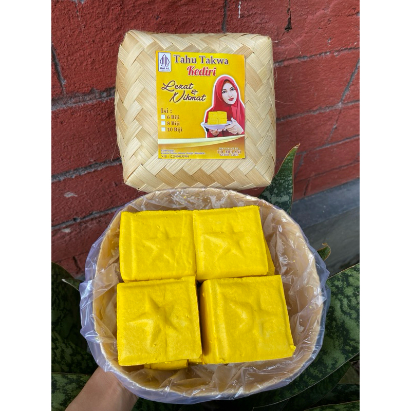
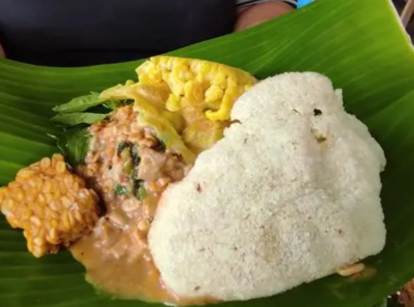
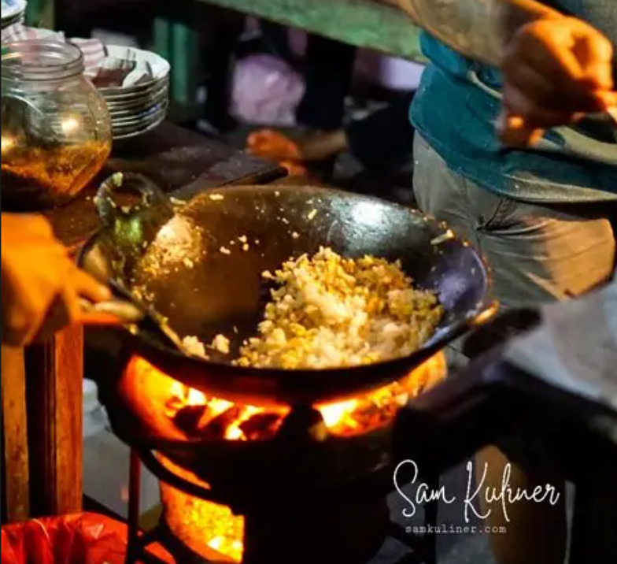
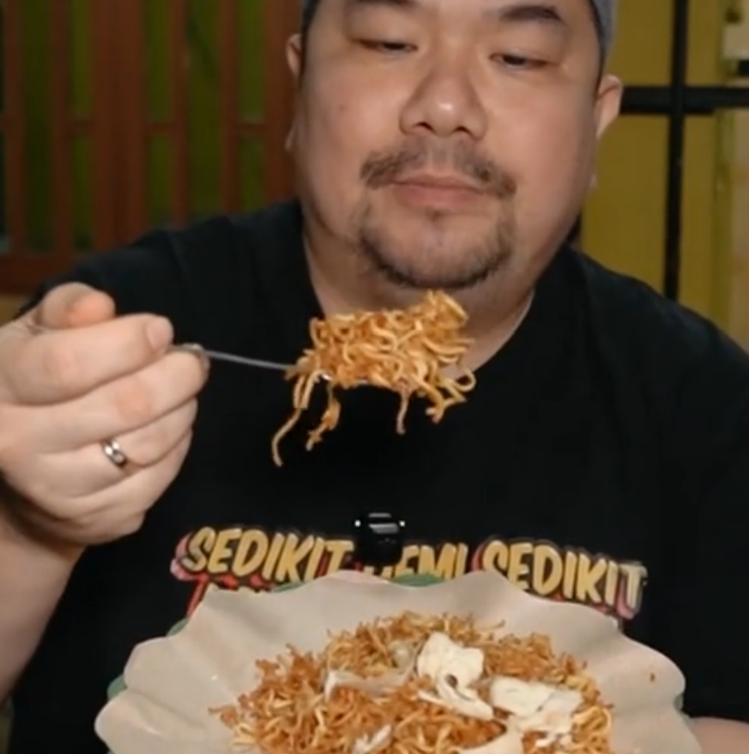

Kuliner Kediri
Kediri menyimpan banyak kuliner yang penuh dengan rasa, dan aku berani bilang bahwa kuliner Kediri termasuk yang paling enak di Jawa Timur.

Tahu Takwa

Pecel Tumpang

Nasi Goreng Arang

Nasgor Jamiah
(Honorable Mention)
(Honorable Mention)